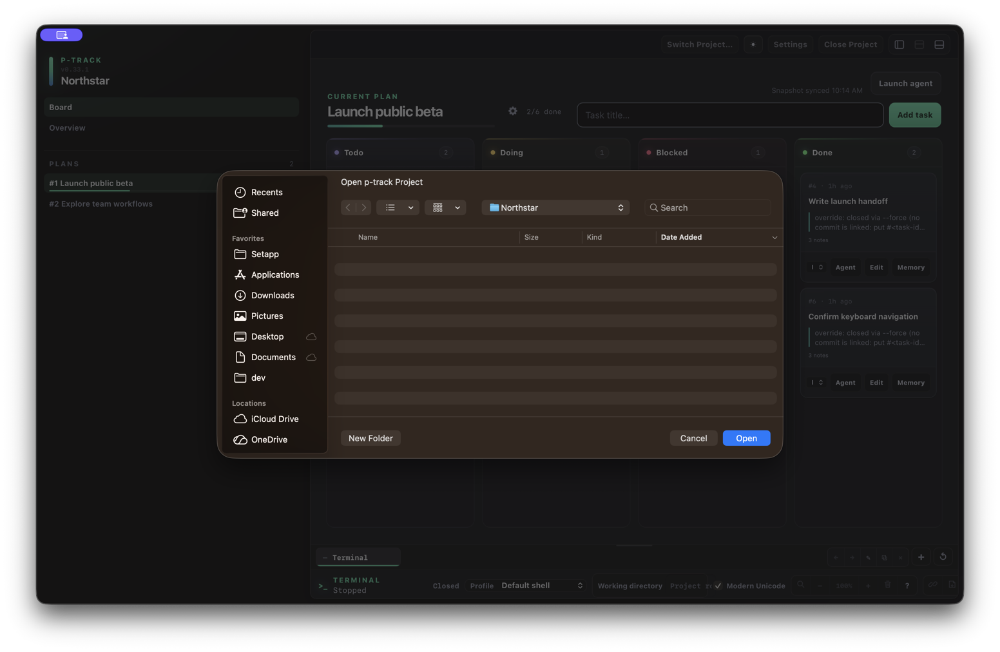
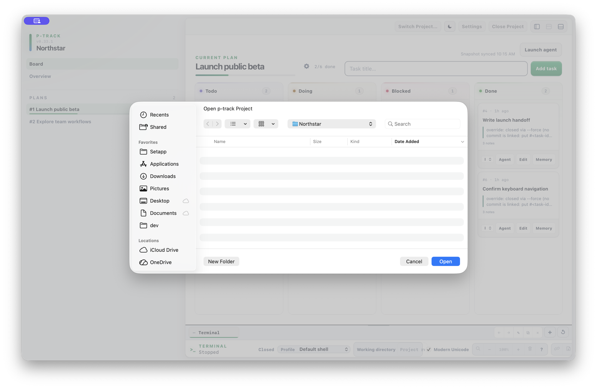
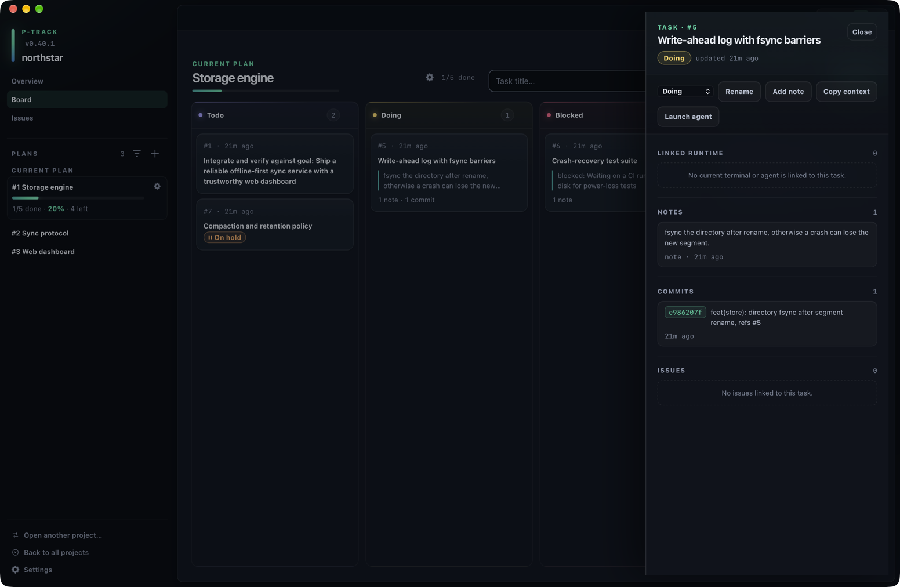
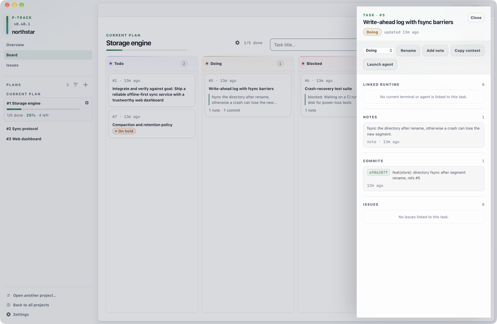
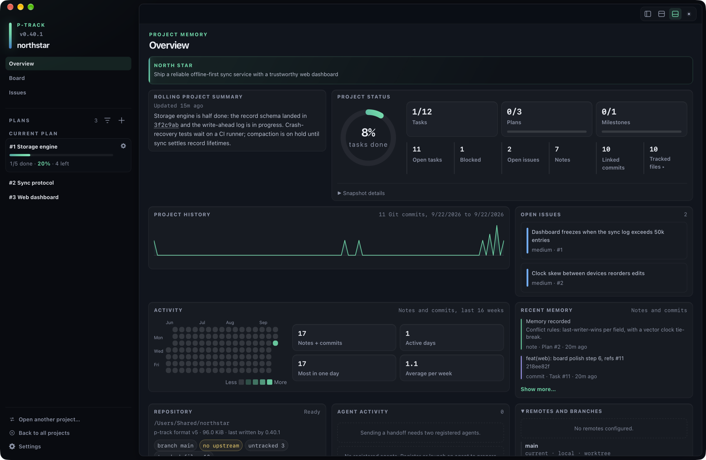
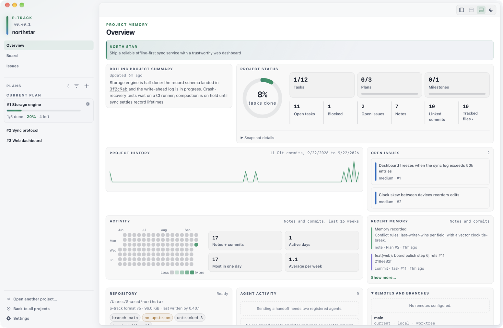
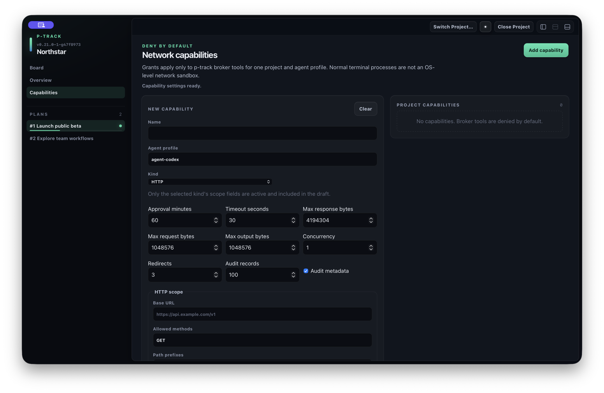
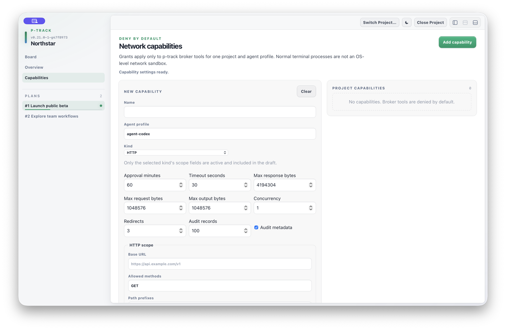

One project control view
See plans, agents, and repository signals together
p-track Desktop puts durable project status beside registered agent activity, bounded repository evidence, terminals, and explicit capabilities. Board, Overview, and Capabilities remain separate views of the same local project record.
Viewing a plan is not activating it. Selecting a plan in the Desktop sidebar changes the snapshot shown on the Board. It does not change the active plan used by CLI defaults. Run ptrack plan use <id> when you intend to change the CLI active plan.
Open, switch, or close a project
When no project is open, the project chooser shows an Open Project… button and recent projects. Choose a directory containing a p-track project. Once it opens, the workspace shows the project name, its plans, and the three primary views.
Use Switch Project… to choose another project without first returning to the welcome screen. Use Close Project to leave the current project and return to the chooser. The same project actions are available from the application menu.
Active resources require confirmation. Switching or closing prompts before leaving when the project has active terminal sessions, agent runs, or pending resource admissions. Review the counts before continuing. The confirmation is tied to the observed project state, expires after one minute, and becomes invalid if that state changes.


Navigate the workspace
The sidebar provides the project views and plan list. Choose:
- Board to add tasks, move work through statuses, open task details, launch agents, and use the terminal dock.
- Overview to read project memory, progress, repository information, and agent coordination signals.
- Capabilities to inspect and configure the selected project's broker capability records.
The plan list shows each plan's ID, title, progress, and an indicator for the CLI active plan. Selecting a row loads that plan's Board snapshot only. The sidebar can be hidden or resized; the Board and terminal panels have independent visibility controls while Board is selected.
The terminal is not a fourth primary view. It is a dock inside Board, so moving to Overview or Capabilities hides the dock without closing its sessions.
Use the Board
The Board groups the selected plan's tasks into Todo, Doing, Blocked, and Done lanes. Its header shows plan progress, provides an add-task field, and can launch an installed agent for the selected plan.
Open a task by clicking its card or focusing the card and pressing Enter. Double-click a card to rename it. Each card also provides a status menu plus Agent, Edit, and Memory actions. Empty lanes collapse to narrow rails and can be expanded again.
Move a task by choosing a status from its menu or dragging the card to another lane. p-track checks the current task and linked-resource state before applying the move. If active resources are linked to that task, Desktop asks for one explicit confirmation and revalidates the state before changing only the task status. Canceling leaves the Board unchanged; a stale confirmation is rejected and the Board refreshes.


Inspect a task and write memory back
The task drawer identifies the task, its status, and its last update. From the drawer you can change status, rename the task, record a memory note, or launch an installed agent for that task.
The drawer's detail sections show:
- Linked runtime — current or historical terminal and agent relationships for the task.
- Notes — durable memory attached to the task.
- Commits — commits associated with the task.
- Issues — linked issues and their severity.
Record memory adds a note to the task. A terminal tab can also be linked to the selected plan or one of its tasks from the Board dock. Its Write memory back flow accepts a decision, blocker, handoff, or project rolling summary, then previews the authoritative destination before writing. Replacing the project rolling summary requires an additional explicit confirmation.


Read the Overview
Overview brings project memory and bounded repository observations together without changing the Board selection. It includes:
- the project goal, rolling project summary, project status, and plan progress;
- a 16-week notes-and-commits activity view, open issues, and recent memory;
- the project root, storage status, and repository summary;
- agent activity, handoff and workflow proposals, drift signals, and notifications;
- expandable remotes and branches, recent commits, blockers, and project notes.
Counts and bounds shown in this view describe the snapshot currently loaded. Agent handoffs and workflow approvals shown here are proposals; the interface labels them separately from task changes and command execution.


Open Capabilities
Capabilities is a primary project view, alongside Board and Overview. Use it to list the project's capability records, review recent audit metadata, and create or edit HTTP, Git, or SSH scope drafts for an agent profile.
The editor separates Preview scope, Test connection, and Save draft. Saving a draft does not silently enable it; approval and enablement remain explicit actions in the capability list. Scope fields and status messages in the view show what is currently configured.
Capabilities and terminals are separate. These records apply to p-track broker tools for the selected project and agent profile. Opening this view does not turn ordinary terminal processes into an operating-system network sandbox.


Open Settings
Settings is an application dialog, not a project view. Open it with Cmd+, or Ctrl+,, from Project ▸ Settings…, or with the Settings button in the workspace toolbar. It opens with or without a project open and holds no project-scoped state. Its five sections are:
- Startup — whether p-track reopens the last project on launch. Off by default.
- Appearance — color theme, density, and reduced motion.
- Terminal — default profile, font family, font size, Unicode mode, scrollback, and renderer for terminals you open next.
- Updates — the automatic-check opt-in; check, download, and install stay in About & Updates.
- Data & Diagnostics — read-only data paths, backup and migration records, recovery status, a capability summary, and the two reset actions.
Changes are saved as you make them and a status line reports each save. Reset to defaults discards the stored record; the next read returns the documented defaults. If a stored settings record cannot be read, Settings says so and keeps showing defaults instead of overwriting it.
Settings and Capabilities are separate surfaces. Settings holds application preferences that apply to every project; the Capabilities view configures broker grants for the selected project and agent profile. Cmd+3 and Project ▸ Network Capabilities… still open Capabilities.
Reopen where you left off
Desktop remembers how its window and workspace were arranged, and can optionally reopen the project you were last working in.
Reopen the last project
Settings ▸ Startup holds one checkbox, Reopen the last project when p-track starts, which is off by default. With it on, p-track reopens the last project it recorded, but only when that project is still present and resolves cleanly. A project that has moved is never opened automatically: p-track lands on the welcome screen instead, with that recent entry marked Preselected so you can see which project it was, and you confirm the new location yourself with Locate… on it. A project path given on the command line always wins over this setting, and closing a project clears the recorded entry.
Window position and size
The window's position, size, and maximized state are restored on the next launch. They are stored in logical coordinates, so a display with a different scale factor restores the same window rather than a shrunken or oversized one. If the stored position no longer lands on any connected display, p-track recenters the window on the primary display at its stored size. Fullscreen is deliberately not restored: a window that was quit in fullscreen reopens windowed. The window stays hidden until its restored geometry is applied, so there is no visible jump at launch.
Sidebar, panels, and view
Layout is remembered too: sidebar width and whether it is hidden, Board and terminal panel visibility, and—per project—the selected view, the selected plan, and which Board lanes you folded. The per-project part covers your 32 most recently used projects. A remembered plan is a hint only; if it no longer exists or belongs to another project, Desktop falls back to the active plan. The task drawer selection is deliberately not remembered, so reopening a project lands on the Board rather than on a task you may have already finished.
Reset window layout or application state
Settings ▸ Data & Diagnostics holds two reset actions. Both ask for confirmation first, and neither appears in the native menus.
- Reset Window Layout clears the stored window and layout state and applies the defaults immediately. Nothing else changes.
- Reset Application State clears everything the application stores about itself — your settings, the automatic update-check opt-in, the startup opt-in and last project, window and layout state, and saved terminal workspaces — and revokes every network capability grant in the open project. The app returns to its default state without a restart.
Reset Application State revokes every capability grant. Network capability grants live in the project, not in application state, so revoking them writes to the open project's database: each grant you approved and enabled is dropped, and agents lose that access until you grant each scope again in Capabilities. Your capability definitions stay as you authored them, so you re-grant rather than re-author, and with no project open nothing is revoked. That is still real work to redo, so the confirmation names it explicitly. Plans, tasks, notes, and the list of recent projects are not touched by either reset.
Workspace at a glance
| Place | Use it for | Important boundary |
|---|---|---|
| Project chooser | Open a recent or different project. | Leaving active resources requires a fresh confirmation. |
| Plan list | Choose the Board snapshot to view. | Selection does not change the CLI active plan. |
| Board | Add, inspect, rename, move, and link task work. | The terminal is a Board dock. |
| Task drawer | Review status, runtime, notes, commits, and issues. | Memory writeback previews its destination. |
| Overview | Read project memory, progress, repository, and coordination signals. | Snapshot bounds remain visible. |
| Capabilities | Draft and manage scoped broker access. | Draft save and enablement are separate. |
| Settings dialog | Set startup, appearance, terminal defaults, update checks, and read diagnostics. | Application-wide; it stores no project state. |
| Reset actions | Restore default window layout, or clear all application state. | Reset Application State also revokes capability grants in the open project; plans, tasks, notes, and Recent projects are not touched. |